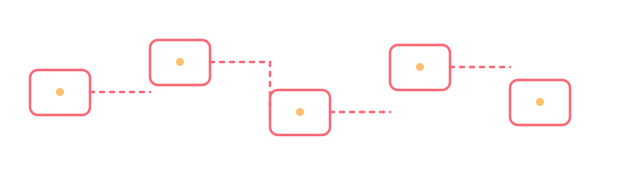

Komfort- & Ausstattungscodierung
Nachträgliche Aktivierung und Anpassung vorhandener Fahrzeugfunktionen über Steuergeräte-Codierung, abgestimmt auf die jeweilige Fahrzeug- und Ausstattungsvariante.
Portfolio
Ein Einblick in die Art von Arbeiten, die wir für Werkstätten und Privatkunden im Volkswagen-Konzern übernehmen. Konkrete Referenzprojekte stellen wir auf Anfrage vor.

Nachträgliche Aktivierung und Anpassung vorhandener Fahrzeugfunktionen über Steuergeräte-Codierung, abgestimmt auf die jeweilige Fahrzeug- und Ausstattungsvariante.
Begleitung von Werkstätten bei der Einrichtung und Nutzung von SFD-/SFD2-Zugängen für VCDS — von der Kontoeinrichtung bis zur ersten erfolgreichen Freischaltung.
Systematische Fehlersuche bei wiederkehrenden oder schwer lokalisierbaren Problemen, bei denen Standard-Diagnoseabläufe nicht zum Ziel führen.
Praxisnahe VCDS-/VCP-Schulungen, zugeschnitten auf die Fahrzeugflotte und Vorkenntnisse des jeweiligen Teams — von Grundlagen bis zu SFD-Spezialthemen.